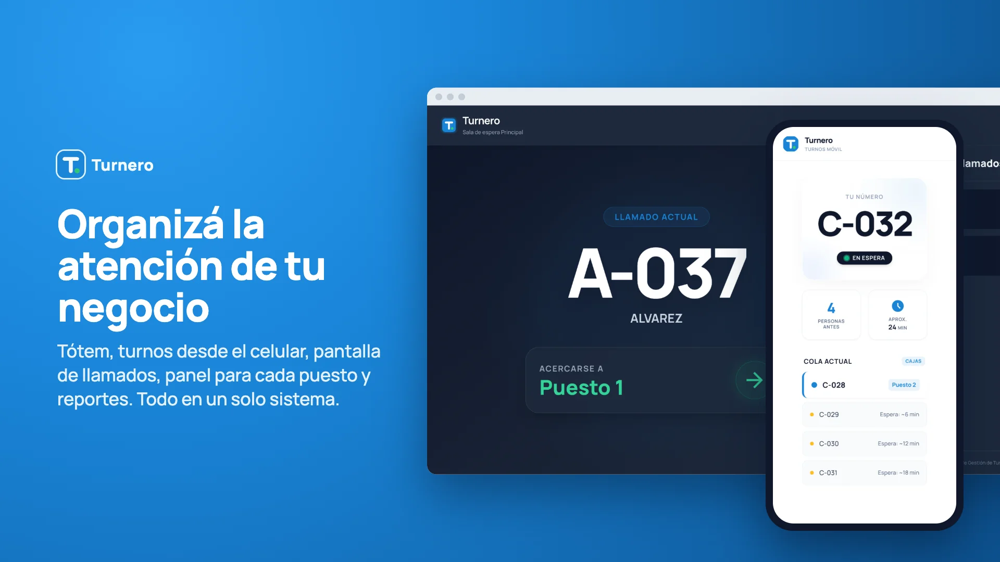
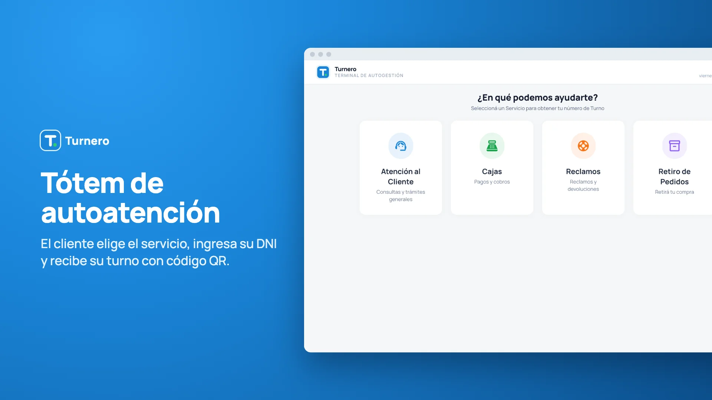
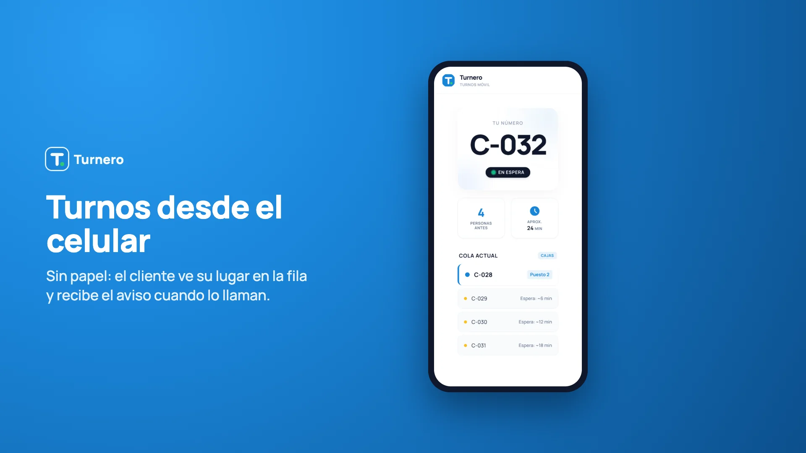
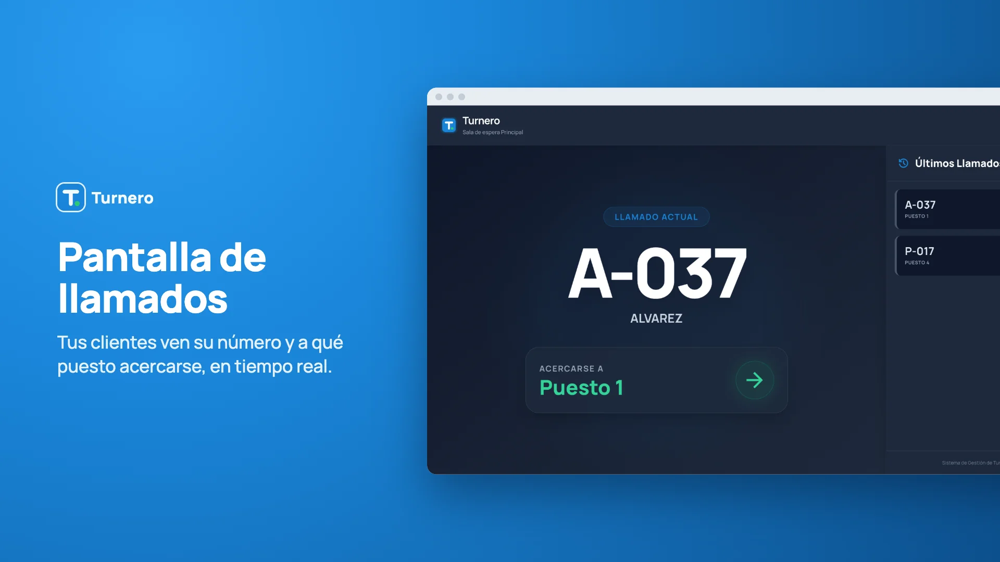
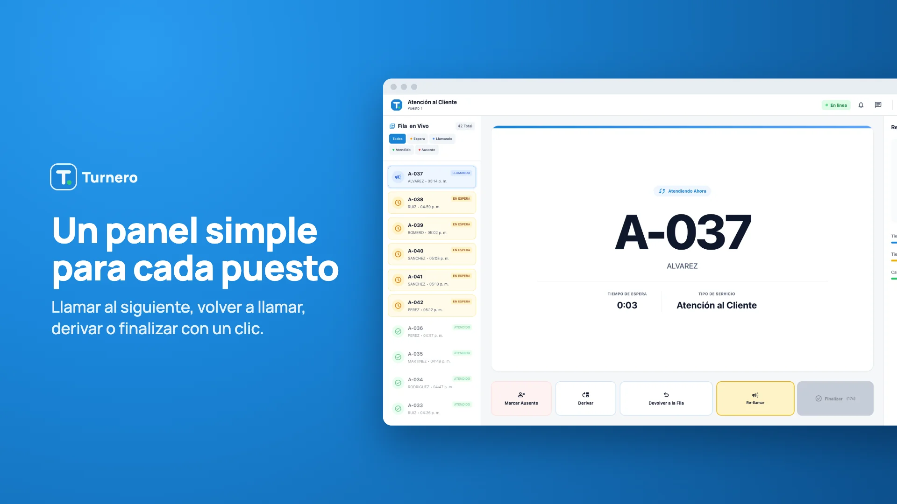
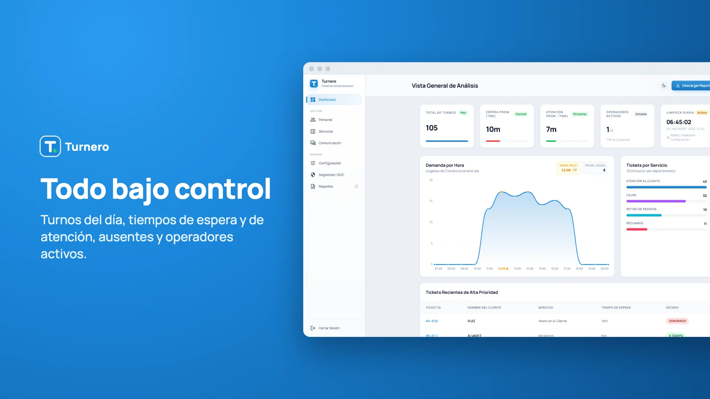
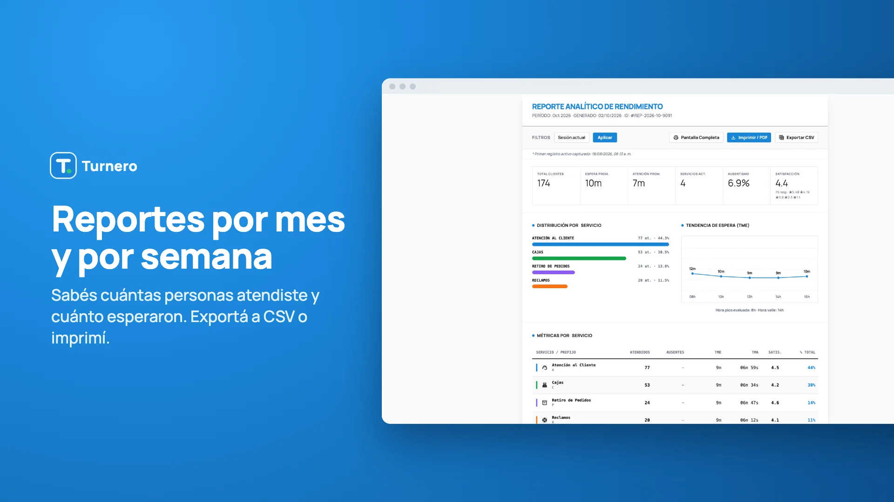
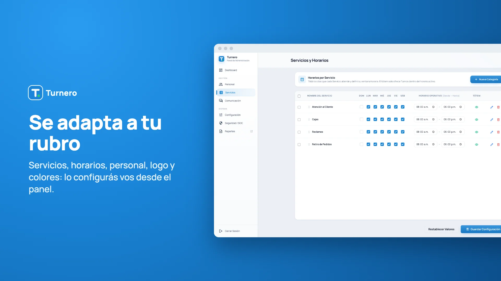

#Node.js
#Socket.IO
#SQLite
Turnero - Gestión de Colas
Sistema integral de gestión de turnos en tiempo real que digitaliza las filas de espera. Procesa conexiones simultáneas desde dispositivos móviles, tótems y pantallas de TV mediante WebSockets, garantizando velocidad y seguridad con un sistema de persistencia híbrida y acceso por roles.